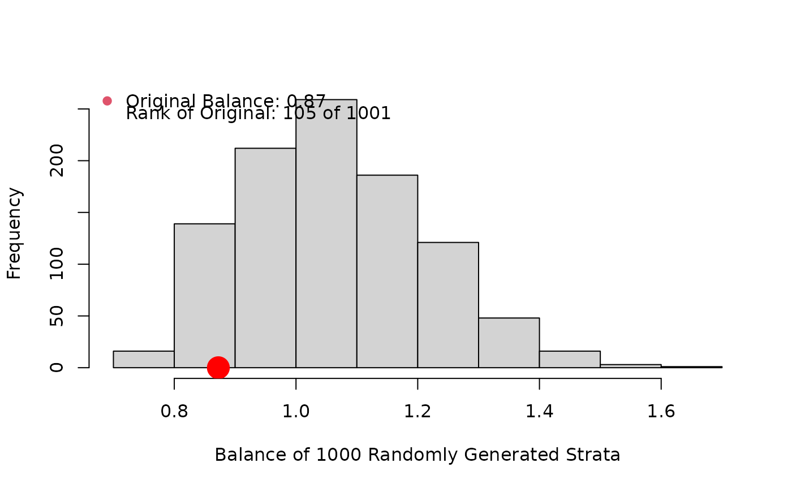
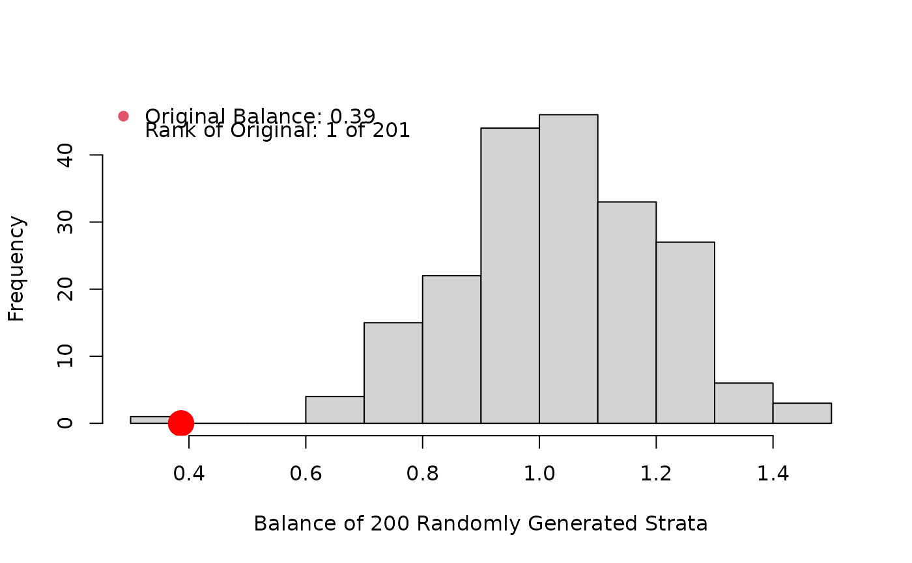

R/bal.cs.psa.R
bal.cs.psa.RdFunction provides a measure of the balance achieved between control and treatment groups for a categorical covariate from user defined strata. This statistic is compared to the same measure for randomly permuted strata.
bal.cs.psa(
categorical,
treatment = NULL,
strata = NULL,
B = 1000,
eps = 0.02,
main = NULL,
...
)Categorical covariate that is being balanced within
strata in a PSA. If categorical has three columns, then the second
and third are assumed to be the treatment and strata respectively. Missing
values are not allowed. May be factor or numeric.
Binary variable of same length as categorical;
generally 0 for 'control,' 1 for 'treatment.'
Integer variable; a vector of same length as
categorical indicating the derived strata from estimated propensity
scores.
Numeric; number of randomly generated iterations of the balance measure are created for the comparison distribution.
Numeric; ensures that weighting is reasonable for small categories.
Title passed to histogram.
Other graphical parameters passed to histogram.
In addition to the histogram, a list with the following components is returned:
Balance measure of user defined strata.
Rank of original balance measure in comparison with the B randomly generated values.
This function measures the balance achieved across K strata for a categorical covariate with J categories. If \(p_{ijk}\) is the proportion of cases in stratum k, category j, and treatment i, then the statistic is the sum over all K, J of \( |\sqrt{p_{0jk} + \epsilon} - \sqrt{p_{1jk} + \epsilon } | \). A permutation distribution is generated by randomly assigning cases to strata, thus generating B permuted stratifications and the associated B permutation statistics. The permutation stratifications are generated under a fixed marginals model to retain comparability with the original stratification. A histogram of the permutation statistics is produced with the original statistic referenced as a red dot.
bal.cws.psa, bal.ms.psa, bal.ks.psa
#Everything random
categorical<-sample(4,1000,replace=TRUE)
treatment<-sample(c(0,1),1000,replace=TRUE)
strata<-sample(5,1000,replace=TRUE)
bal.cs.psa(categorical,treatment,strata)

#> $balance.orig
#> [1] 0.8522021
#>
#> $rank.orig
#> [1] 456
#>
#Perfect balance on 80%, random on last 20%
categorical<-rep(sample(5,1000,replace=TRUE),2)
treatment<-c(rep(0,1000),rep(1,1000))
strat<-sample(6,1200,replace=TRUE)
strat<-c(strat[1:1000],strat[1:800],strat[1001:1200])
bal.cs.psa(categorical,treatment,strat,B=200)

#> $balance.orig
#> [1] 0.5332899
#>
#> $rank.orig
#> [1] 2
#>